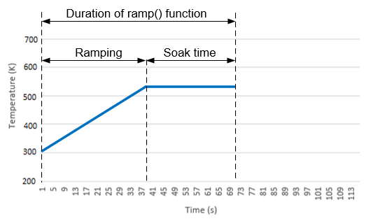

..
Ramps the stage temperature up or down according to the settings specified by the parameter.
Syntax
ramp(settings)
Parameters
Remarks
The ramp command is executed in 2 stages. First, the temperature is raised or lowered to the target value with ramping speed
specified in the settings parameter. When the temperature is reached within given tolerance,
the second stage is executed - the system remains at the target temperature for the time specified by the "soak time" parameter in settings.

More remarks:
-
The function fails with an exception if the target temperature is not reached within specified timeout.
If no timeout is provided and the temperature cannot be reached for some reason, the command never completes.
See the comment about long synchronous calls abort mechanism below.
-
If the tolerance value is not specified in the settings, a default value of 0.5 K is used.
-
If the soak time value is not provided in the settings, the ramp() function will end immediately after the target temperature is reached.
-
If the ramping speed is not provided in the settings, the value currently set in microscope in used.
-
The function will turn the stage on if it is not already on.
Specifics of long synchronous calls on the AutoScript server:
-
The AutoScript server can only process one incoming call at a time. At the same time, the ramp() function was designed to be fully
synchronous, with call durations ranging from seconds to hours.
During this period, no other scripting commands can be executed on the server.
A special mechanism has been implemented in the AutoScript Server to detect if the client script has been forcibly stopped.
If so, it aborts the execution of the ramp() function to unblock the server for further processing of scripting commands.
Due to infrastructure constraints, the abort mechanism takes effect with a 30s delay.
Therefore, if you decide to abort your script during execution of the ramp() function, allow a recovery time of 30 seconds
before executing the next script.
Examples
# Assuming the stage is at room temperature
# Raise the temperature to 423 K (150˚C) with speed 2 K/s
settings = TemperatureSettings(target_temperature=423, ramping_speed=2, tolerance=0.1, timeout=10*60)
microscope.specimen.temperature_stage.ramp(settings)
print("Target temperature reached.")
# Lower the temperature to 413 K (140˚C) and stay on this temperature for 2 minutes.
# The ramping speed remains at 2 K/s.
settings = TemperatureSettings(target_temperature=413, tolerance=0.1, soak_time=2*60)
microscope.specimen.temperature_stage.ramp(settings)
print("Experiment finished.")